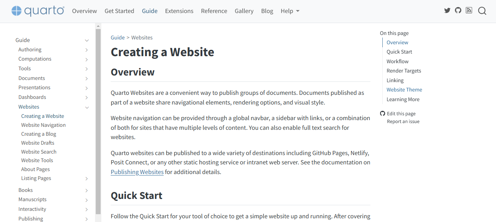
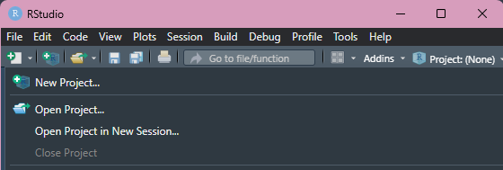
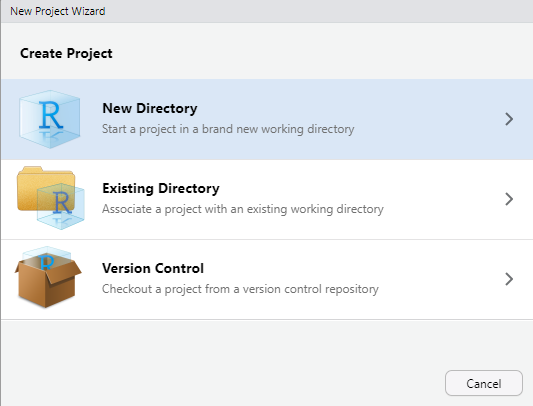
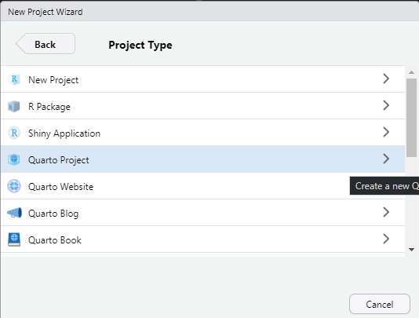
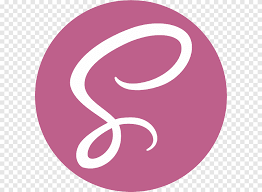
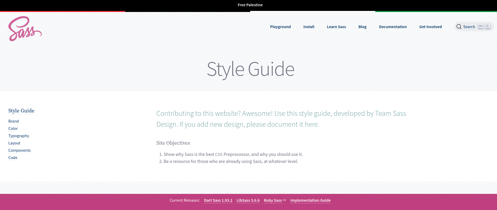

Como eu criei meu website usando Quarto

Introdução
Há um tempo, pensava em criar um website para publicar meus projetos e ideias. Como usuária de R, utilizar o Quarto pareceu a melhor ideia devido à usabilidade desta ferramenta para publicações e renderizações. Além de outras características desejáveis, como a existência de suporte para CSS ou SCSS, a disponibilidade de templates agradáveis e de fácil manipulação, e também a compatibilidade com outras linguagens, como Python (que já programo) e Julia (que espero aprender um dia).
Dito isso, havia algumas características que eu queria que meu website tivesse, como: (1) uma estética agradável e layout intuitivo, (2) suporte multilíngue com um botão para as línguas que falo e estudo, e (3) modo escuro. Também havia algumas características que eu precisava que meu website tivesse, como: (1) uma aba para portfólio, (2) um blog com índice organizado, e (3) acesso às minhas redes sociais e ao currículo vitae. Assim, neste blog tutorial, irei explicar como fiz cada etapa e que ferramentas utilizei.
Porque o Quarto?
Há várias ferramentas baseadas no R que podem ser usados para constriur websites, como {blogdown} e {distill}, entretando escolhi Quarto por sua versatilidade e fácil customização.
O {blogdown} foi uma das primeiras opções para criação de blog e se baseia no Hugo, um gerador de sites estáticos que oferece uma grande variedade de temas prontos. O {distill} surgiu como uma alternativa com foco acadêmico. Ele produz páginas com visual limpo, ideal para publicações científicas, apresentações de projetos ou relatórios técnicos. Há menos opções de personalização e o projeto não está mais em desenvolvimento ativo.
| Ferramenta | Ideal para | Suporte a múltiplas linguagens | Personalização | Facilidade de uso |
|---|---|---|---|---|
| blogdown | Blogs técnicos com Hugo | Somente R | Alta | Média |
| distill | Publicações científicas simples | Somente R | Baixa | Alta |
| Quarto | Sites, blogs, livros e slides | R, Python, Julia, Observable | Alta | Alta |
Passo 1: Configurações
R e RStudio
Instale o R (CRAN) e o RStudio (RStudio Download).Quarto
A partir da versão2022.07.1do RStudio, o Quarto já vem incluído.
Caso contrário, baixe manualmente aqui: quarto.org/docs/get-startedGit e GitHub
Instale o Git em git-scm.com e configure-o no terminal.
No geral, o primeiro passos para criar um blog não é complexo devido ao guia longo e detalhado que foi criado pelo time que desenvolveu o Quarto.

Após baixar (ou atualizar) o quarto no seu computador, eu sugiro ler em detalhes o guia e também olhar exemplos de blogs/portfolios criados por outras pessoas com o quarto. Eis alguns que indico:
O site da Sam Shanny-Csik
O site da Beatriz Milz
O site da Danielle Navarro
Passo 2: Criando um novo projeto de blog no RStudio
Abra o RStudio e siga o caminho abaixo:
- Vá em
File>New Project…

- Selecione
New Directory

- Depois clique em Quarto Blog

Nomeando e salvando seu blog
Agora, preencha os seguintes campos:
Directory name: o nome da sua pasta (ex: meu-blog)
Create project as subdirectory of: escolha onde deseja salvar o projeto no seu computador
Você também pode marcar a opção Open in new session para abrir o projeto em uma nova aba do RStudio.
Clique em Create Project.
Estrutura inicial do Projeto
Assim que você criar o projeto, verá uma estrutura de arquivos semelhante a esta:
meu-blog/
├── _quarto.yml
├── index.qmd
├── about.qmd
├── posts/
│ └── welcome/
│ └── index.qmd
└── styles.css_quarto.yml: arquivo de configuração geral do siteindex.qmd: página inicial do blogabout.qmd: sua página “sobre”posts/: pasta com suas postagens (uma subpasta para cada post)styles.css: folha de estilo personalizada (cores, fontes, etc.) :::
Após essa etapa, clique em qualquer arquivo .qmd, como o index.qmd, e depois clique no botão Render no canto superior direito do editor para renderizar o arquivo.
Passo 3: Manipulando a estrutura do _quarto.yml
Nesta etapa, você aprenderá a alterar o título do site, mudar o tema, editar o menu de navegação e configurar os estilos visuais com CSS.
Arquitetura do projeto
Um site em Quarto segue esta estrutura fundamental:
arquivos.qmd: Cada página do site (como index.qmd, about.qmd)\_quarto.yml: Arquivo principal de configuraçãoPasta
\_site: Gerada automaticamente durante a renderizaçãoRecursos estáticos: Imagens, CSS e JS (normalmente em public/ ou images/)
A importância do _quarto.yml
O arquivo _quarto.yml é o coração da configuração do seu site. Ele controla todas as configurações globais do seu site. Pense nele como o “painel de controle” central.
Um exemplo de formato de yaml:
_quarto.yml
project:
type: website # Define que é um projeto de website
website:
# Configurações gerais do site
title: "Título do Site"
navbar: # Menu de navegação
left/right: # Itens alinhados à esquerda/direita
...
format:
html:
theme: ... # Aparência visual
css: ... # Personalizações CSSA indentação no YAML é feita com espaços, não com tabulação. Um erro de espaço pode causar problemas na renderização. Se aparecer uma mensagem de erro do tipo “unexpected indent” ou “mapping values are not allowed here”, verifique os espaços e a formatação do seu \_quarto.yml.
Inicialmente, é necessário definir o tipo de projeto como um website na aba de type no project. Na aba navbar é onde se define o menu superior do site. Você pode adicionar links à esquerda (left) ou direita (right). Pode incluir ícones, arquivos .qmd, ou links externos.
Estruture seu menu pensando na jornada do usuário, comumente em sites é utilizado o formato:
Esquerda: Links principais (sobre, blog, portfólio)
Direita: Ações secundárias (redes sociais, contato, documentos)
Cada item no menu que referencia um arquivo .qmd (como about.qmd) corresponde a uma página que deve existir no seu projeto. O Quarto automaticamente converte esses arquivos para HTML, mantém a navegação sincronizada e aplica o tema e estilos definidos.
Os arquivos .qmd definidos nos “file” dentro dos navbar são as páginas para cada aba definida, sendo então cada página gerada por um arquivo qmd diferente.
Para meu site, decidi estruturar meu site com quatro páginas principais: uma página inicial (index.qmd) utilizando um template de about page do Quarto como base, uma seção “Sobre Mim” (about.qmd) para compartilhar minhas experiências e objetivos profissionais, uma página de “Portfólio” dedicada aos meus projetos de programação e análise estatística, e uma seção “Blog” (blog.qmd) para publicar tutorais, reflexões e ideias. A página inicial foi desenvolvida a partir dos templates disponíveis na documentação do Quarto neste link.
No fim,a seção de website do meu arquivo qmd ficou assim:
_quarto.yml
website:
title: "Beatriz Lima"
favicon: images/lemon_icon.png
navbar:
title: "Beatriz Lima"
logo: images/lemon_icon.png
#logo-alt: "Beatriz Lima"
left:
- icon: github
href: # link para meu github
- icon: linkedin
href: # link para meu linkedn
- icon: envelope
href: # link para meu email
right:
- about.qmd
- portfolio.qmd
- blog.qmd
- text: CV
menu:
- text: English
href: # meu curriculo em ingles
- text: Português
href: # meu curriculo em português
page-footer:
background: light
left: Website build with [Quarto](https://quarto.org/){target=_blank}
right: Copyright 2024, Beatriz Lima
format:
html:
theme: bea_theme.scss
mainfont: Courier Prime
fontawesome: trueDetalhes de como eu construi a seção de tema e escolhas pessoais de estética como fonte e elemento visuais estará mais explicado na seção sobre customização.
Passo 4: Publique seu site com o Github Pages
Deploy (implantação) é o processo de disponibilizar seu site local na internet. Para realizar esse processo com algum projeto do quarto, isso envolve: (1) Renderizar o documento .qmd para HTML, (2) Hospedar os arquivos em um servidos acessível e (3) publicar esse material.
Existe diversas formas de publicar sites atualmente, após de ter estudado diversas possibilidades acabei decidindo pelo método mais simples e rápido.
Quando considerar o Netlify?
Um dos diferenciais em relação ao Pages é o sistema de pré-visualizações para cada Pull Request, que permite revisar as mudanças em um ambiente isolado antes de mesclá-las à produção. Para projetos que demandam funcionalidades dinâmicas, o Netlify oferece integração nativa com funções serverless, permitindo a criação de APIs simples e processamento de formulários sem a necessidade de configurar um backend complexo.
Vantagens principais:
- Deploy contínuo: Integração nativa com GitHub/GitLab
- Previews de PR: Visualize mudanças antes de mergear
- Serverless functions: Execute código backend sem servidor
- Forms handling: Colete dados de formulários sem backend
- Redirects/rewrites: Configuração via
_redirectssimples
Configurando um repositório
Da mesma forma que foi criado um projeto no seu computador, é necessário criar um repositório na sua conta do github para hospedar o seu futuro site. Primeiro, acesse sua conta no GitHub e clique em “New repository”.
Nomeie o repositório e, se quiser que o site seja acessado diretamente em https://<seu-usuario>.github.io, utilize exatamente este formato como nome do repositório: <seu-usuario>.github.io
Se seu nome de usuário no GitHub for beatriz-ls, o nome do repositório deve ser beatriz-ls.github.io.
Caso use outro nome, o site ficará disponível em: https://<seu-usuario>.github.io/<nome-do-repositorio>
Em seguida:
Marque a opção “Public” para tornar o repositório público.
Você pode adicionar um
READMEpara incluir informações sobre o site.Clique em “Create repository”.
Assim, o repositório remoto a próxima estapa é passar o seu projeto quarto para esse repositório.
Inicializando o repositório local e conectando ao GitHub
No seu computador, dentro da pasta do projeto do site que você criou com o Quarto, abra o terminal (ou use o terminal do RStudio) e execute os seguintes comandos para iniciar o Git e conectar ao seu repositório no GitHub:
# Inicialize o repositório Git local
git init
# Adicione todos os arquivos ao controle de versão
git add .
# Faça o primeiro commit com uma mensagem descritiva
git commit -m "Primeiro commit do site Quarto"Depois, conecte seu projeto local ao repositório remoto que você acabou de criar no GitHub:
# Substitua <seu-usuario> e <nome-do-repositorio> conforme o seu caso
git remote add origin https://github.com/<seu-usuario>/<nome-do-repositorio>.gitPor fim, envie os arquivos para o GitHub:
git branch -M main # Garante que a branch principal se chame "main"
git push -u origin mainRealizando o Deploy
O GitHub Pages espera que os arquivos do site estejam dentro de uma pasta chamada docs/ no seu repositório, devido a configurações padrões. Por padrão, o Quarto cria uma pasta chamada _site/, mas podemos mudar isso facilmente no arquivo _quarto.yml.
Abra o arquivo _quarto.yml do seu projeto e adicione (ou ajuste) a seguinte configuração:
_quarto.yml
project:
type: website
output-dir: docs # GitHub Pages usa esta pasta para exibir o siteCom isso, toda vez que você rodar o comando quarto render, os arquivos HTML do site serão gerados dentro da pasta docs/, que o GitHub Pages reconhecerá automaticamente para exibição.
Não apague ou edite manualmente a pasta docs/. Ela será atualizada automaticamente sempre que você renderizar o site com quarto render.
Agora que os arquivos do site já estão no GitHub, falta apenas ativar o GitHub Pages:
Acesse o seu repositório no GitHub.
Clique em Settings (canto superior direito).
No menu lateral, vá até Pages.
-
Em Build and deployment, configure:
Source: Deploy from a branch
Branch: main
Folder: /docs
Clique em Save.
Após essa etapa, vai iniciar o processo de deploy.
Passo 4: Customização com SCSS
O Quarto utiliza o framework Bootstrap para definir o visual e o layout dos sites criados.
Um framework é como uma estrutura pronta ou uma caixa de ferramentas que te ajuda a construir algo de forma mais rápida e organizada. Ele oferece componentes, regras e padrões que você pode seguir — economizando tempo e evitando que você tenha que fazer tudo do zero.
O Bootstrap é um framework de front-end. Ele te dá uma base pronta com estilos modernos e responsivos para construir seu site — sem precisar escrever todo o CSS do zero.
Bootstrap é um dos frameworks front-end popular e que fornece uma base sólida de componentes (como botões, menus, navegação, tabelas, alertas e muito mais) com design responsivos. Visto que o Quarto usa o Bootstrap, é possivel realizar modificações na estética utilizando Bootswach - um projeto que oferece variações de temas visuais para o Bootstrap. Os temas disponíveis estão aqui. Para incluir os temas no seu projeto, modifique o arquivo -quarto.yml na seção de format.
_quarto.yml
format:
html:
theme: cosmoDito isso, para a estética do website, é possivel utilizar um dos temas, fazer modificações com css que subrescrevendo algumas áreas do tema, ou, criar um tema completamente novo com css.
Neste website, foi utilizado um tema completamente novo utilizando scss.
O que é SCSS?

O SCSS (Sassy CSS) é uma sintaxe do pré-processador Sass, que compila para CSS padrão. Ele funciona como uma camada extra de organização sobre o CSS tradicional, permitindo que você escreva códigos de forma mais reutilizável e escalável.
Algumas das principais diferenciais da utilização do SCSS:
- Criação de variáveis: É possivel criar variáveis para cores, fontes, espaçamentos etc.
theme.scss
$cor-principal: #5b84e7;
body {
background-color: $cor-principal;
}Operações e lógica simples: como cálculos com unidades (ex:
width: 100% / 3;) ou uso de condicionais.Modularização: você pode dividir seu código em vários arquivos menores e depois juntá-los automaticamente, o que facilita a organização.
Desta forma, escolhi utilizar o SCSS por achar que iria facilitar a minha escrita do código, como uma pessoal que ainda está aprendendo a passos lentos a mexer com CSS e HTML.
Neste tutorial não irei explicar em detalher como programar com SCSS, mas afirmo que o guia bem feito pelo próprios criadores do Sass foi suficiente para as customizações do meu website especificamente.

Dicas para criar uma estética com SCSS
As necessidades mais importantes são :
- Uma paletta de cores: Selecione três ou quatro cores que se complementam. Você pode buscar inspiração no Coolors ou no Pinterest;
- Fontes: Escolha uma fonte para os títulos e outra para o corpo do texto, o Google Fonts é uma ferramenta útil para escolher fontes;
- Elementos visuais (ícones, imagens, símbolos): Como ícones e simbolos.
Dica 1: Fontes com Google Fonts
Para importar uma fonte do Google Fonts é só copiar o link de importação do site e incluir no arquivo .scss.
theme.scss
@import url('https://fonts.googleapis.com/css2?family=Quicksand:wght@400;700&display=swap');Depois definir a fonte nas seções desejadas:
theme.scss
body {
font-family: 'Quicksand', sans-serif;
}
h1, h2, h3 {
font-family: 'Quicksand', sans-serif;
font-weight: 700;
}Dica 2: Ícones com FontAwesome
Adicionar ícones ao seu site pode deixá-lo mais visual, dinâmico e informativo. O FontAwesome é uma extensão de fácil download que pode ser utilizado para fezer um site ter mais a sua cara.
O Quarto oferece uma extensão oficial para FontAwesome. Para instalar, basta rodar o seguinte comando no terminal (ou console do RStudio):
quarto install extension quarto-ext/fontawesomeEsse comando irá adicionar uma pasta chamada \_extensions ao seu projeto, contendo os arquivos necessários para utilizar o FontAwesome.
Depois de instalada a extensão, você pode utilizar os ícones diretamente nos seus arquivos .qmd, de forma bem simples, usando a sintaxe .
A lista completa de ícones disponíveis pode ser vista em: Aqui
Passo Extra: Website Multilingual

Eu tinha o interesse de criar um site que tivesse um botão com capacidade de mudar a lingua, devido ao quarto não possuir suporte para isso, utilizei um pacote chamado {babelquarto} criado por Maëlle Salmon e Pascal Burkhard que serve justamente para esse objetivo. Ele automatiza a gestão de páginas traduzidas, adiciona botões para alternar de idioma e ajuda a manter o conteúdo sincronizado entre as versões.
Quando comecei a trabalhar no meu site, o {babelquarto} tinha sido lançado a pouco tempo e tinha pouca bibliográfia na internet de como utilizar, então aprender o funcionamento foi realmente um desafio. Entretanto, para a sorte daqueles que estão seguindo esse tutorial, Joel Nitta, um contribuidor desse pacote, escreveu um tutorial em inglês mais detalhado de como utilizar esse pacote poucos meses depois de eu ter aplicado no meu site.
Penso em talvez escrever uma postagem sobre minha experiência utilizando esse pacote, mas ainda para um futuro mais distante.
Considerações finais
Neste post, detalhei os métodos que utilizei para construir meu próprio website e compartilhei as principais fontes e inspirações que me ajudaram a aprender as ferramentas. Apesar de ter sido bastante detalhista, confesso que optei por simplificar alguns tópicos na postagem — como na seção de deploy, em que apresentei um método mais direto em vez de explicar como utilizei o GitHub Actions para automatização. Pretendo escrever um post separado sobre esse tema, que é mais complexo e merece uma atenção especial. Espero que este post funcione não só como um guia, mas também como um incentivo para que você crie seu próprio site, do seu jeito, com as ferramentas que fizerem mais sentido para você.